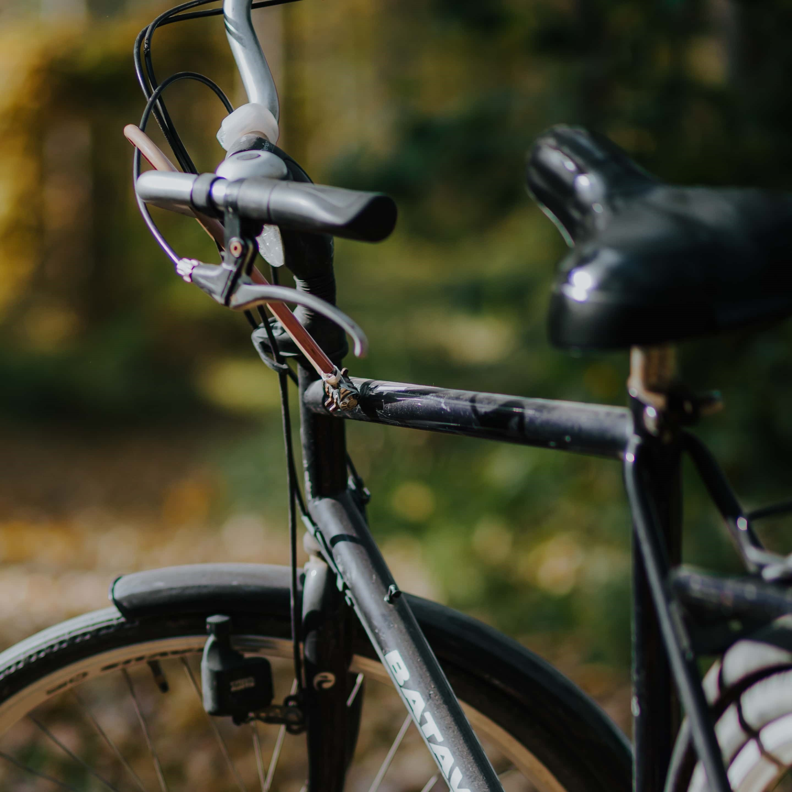
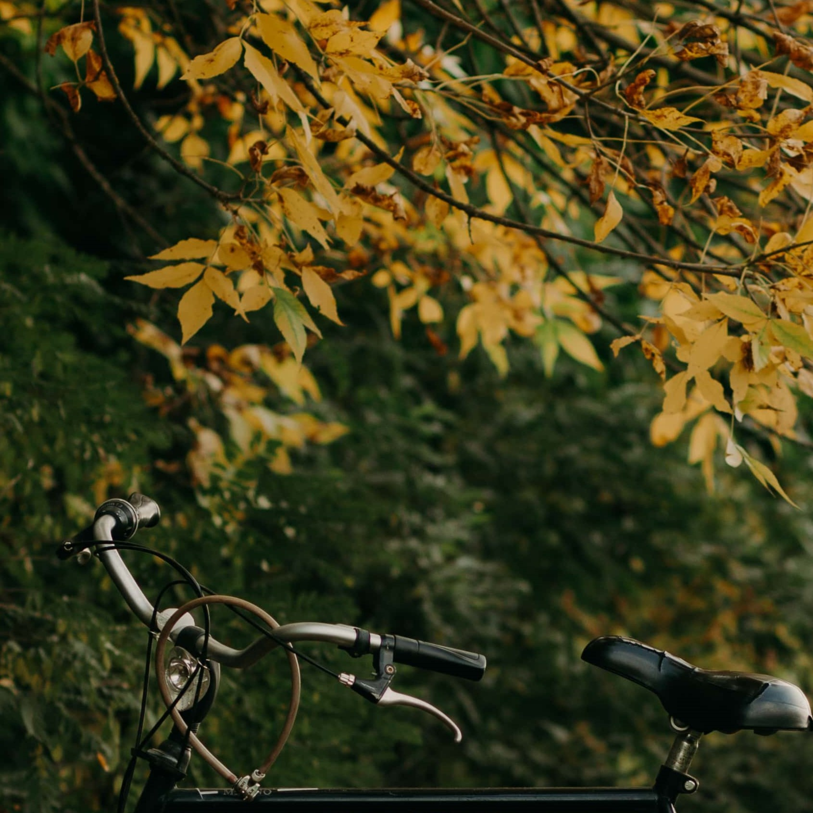
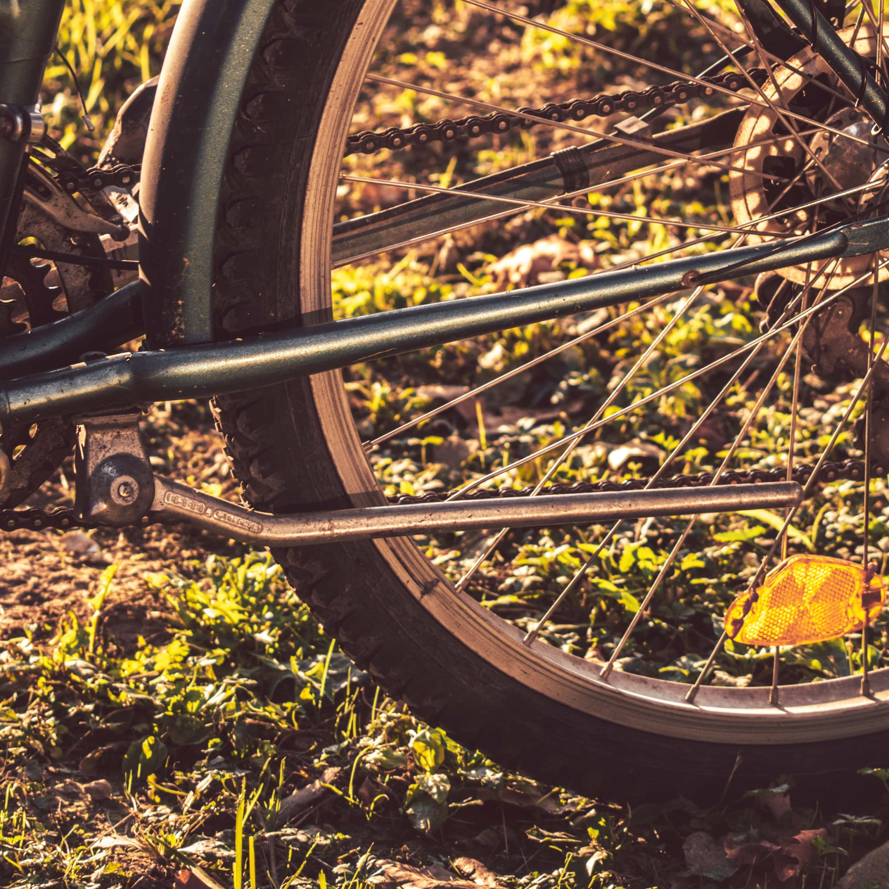
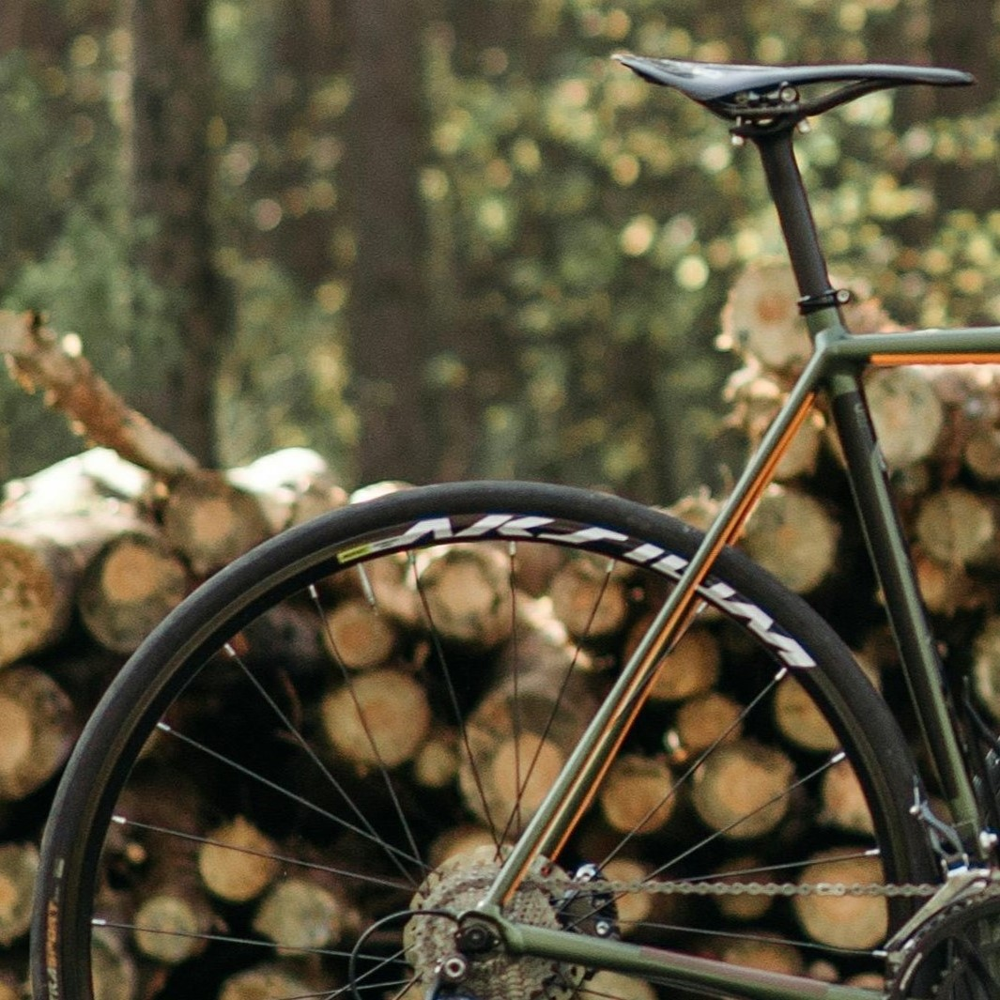
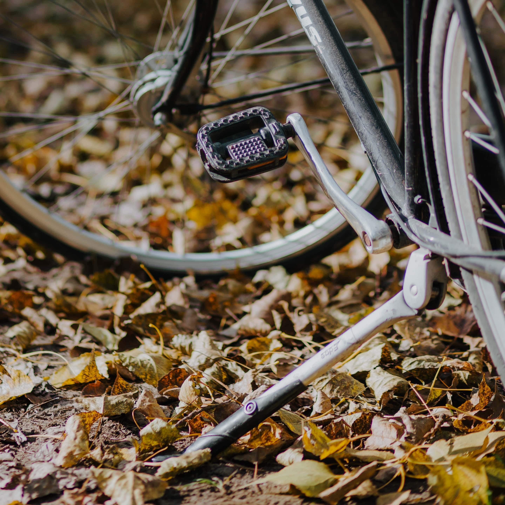
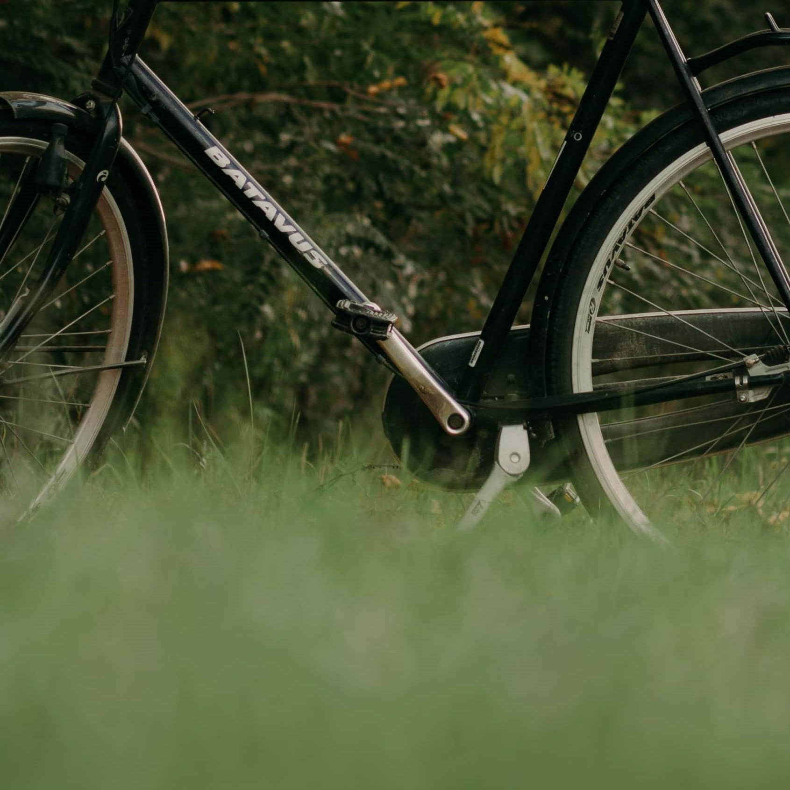
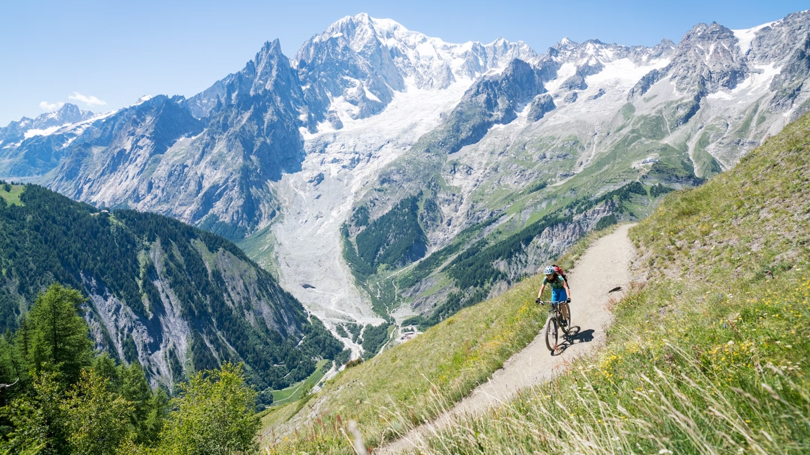

World on wheels
     
Bicycle routes for everyone
For many, traveling by bike is the antithesis to the modern trend of fast, fly-in-fly-out travel. In fact, it’s hard to envisage a better way to explore a country than on two wheels, slowly meandering along as the landscape unfurls before you. Cycling gives you time to admire your surroundings, draws you away from the tourist crowds and, perhaps best of all, it’s sustainable – causing no harm to the environment you’ve traveled to see.
